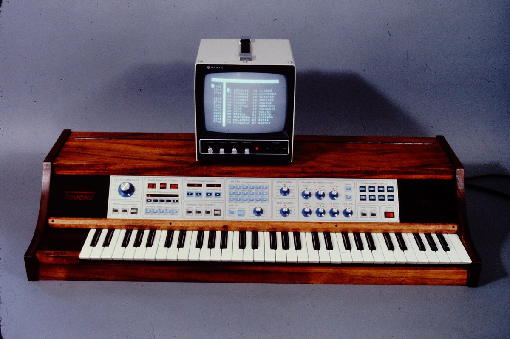

c.1978
Buchla & Associates (Don Buchla)
Buchla Touché
Don Buchla's reluctant piano keyboard atop a touch plate, programmed through a language called FOIL and a separate monitor

Overview
Deep dive
Team & pioneers
- Don Buchla. Designer and builder; founder of Buchla & Associates; pioneer of voltage-controlled modular synthesizers.